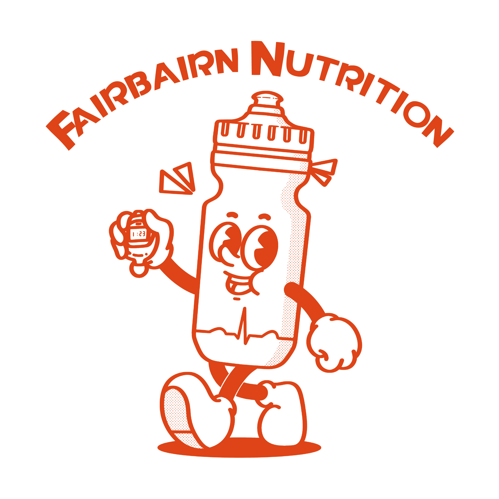

<!DOCTYPE html>
<html lang="en">
<head>
  <meta charset="UTF-8" />
  <meta name="viewport" content="width=device-width, initial-scale=1.0" />
  <title>Fairbairn Nutrition — James Connold Race Day Guide</title>
  <link href="https://fonts.googleapis.com/css2?family=DM+Sans:ital,wght@0,300;0,400;0,500;0,600;0,700;1,400&family=DM+Mono:wght@400;500&display=swap" rel="stylesheet" />
  <script src="https://unpkg.com/react@18.3.1/umd/react.development.js" integrity="sha384-hD6/rw4ppMLGNu3tX5cjIb+uRZ7UkRJ6BPkLpg4hAu/6onKUg4lLsHAs9EBPT82L" crossorigin="anonymous"></script>
  <script src="https://unpkg.com/react-dom@18.3.1/umd/react-dom.development.js" integrity="sha384-u6aeetuaXnQ38mYT8rp6sbXaQe3NL9t+IBXmnYxwkUI2Hw4bsp2Wvmx4yRQF1uAm" crossorigin="anonymous"></script>
  <script src="https://unpkg.com/@babel/standalone@7.29.0/babel.min.js" integrity="sha384-m08KidiNqLdpJqLq95G/LEi8Qvjl/xUYll3QILypMoQ65QorJ9Lvtp2RXYGBFj1y" crossorigin="anonymous"></script>
  <style>
    *, *::before, *::after { box-sizing: border-box; margin: 0; padding: 0; }
    html, body, #root { width: 100%; height: 100%; overflow: hidden; }
    body { font-family: 'DM Sans', sans-serif; background: #F4F2EF; color: #111; }
    ::-webkit-scrollbar { width: 5px; }
    ::-webkit-scrollbar-track { background: transparent; }
    ::-webkit-scrollbar-thumb { background: #CCC9C4; border-radius: 4px; }
  </style>
</head>
<body>
<div id="root"></div>
<script type="text/babel">

const C = {
  blue:       '#63A0BF',
  orange:     '#DE4417',
  white:      '#FFFFFF',
  bg:         '#F4F2EF',
  soft:       '#FDFCFB',
  dark:       '#111111',
  muted:      '#777777',
  rule:       '#E6E4E0',
  blueTint:   '#EEF6FB',
  orangeTint: '#FFF3F0',
  greenTint:  '#F0FAF4',
};

// ─── DATA ──────────────────────────────────────────────────────────────────

const PLAN = {
  athlete:      'James Connold',
  race:         'Jurassic Coast Ultra Challenge',
  distance:     '100 km',
  route:        'Corfe Castle to Bridport',
  date:         'Saturday 16 May 2026',
  start:        '7:00 am',
  targetFinish: '16–18 hours',

  keyNumbers: [
    { label: 'Carb Target',         value: '60–70 g/hr',    sub: 'avg ~64 g/hr across race' },
    { label: 'Total In-Race Carbs', value: '~1,085 g',      sub: '17 hours · ~1,115 g with optional gel' },
    { label: 'Fluid Target',        value: '900–950 ml/hr', sub: '2 × Lucozade Sport flasks + bladder' },
    { label: 'Total Fluid',         value: '~15 L',         sub: 'across full race' },
    { label: 'Sodium Target',       value: '~500 mg/hr', sub: '~230mg/hr Lucozade Sport · ~300mg/hr PH500 tabs in bladder' },
    { label: 'Caffeine',            value: '200–300 mg',    sub: '2 confirmed + 1 optional, all before 9pm' },
  ],

  overviewPoints: [
    'Nothing new on race day — every product in this plan has been practised in training.',
    'Carb target is 60–70 g/hr. Drink is Lucozade Sport — 32g/flask for the first two hours, 26g/flask for most of the race.',
    'Mix of Squares Bars, jelly babies, dates, biltong and aid station food — rotated to prevent flavour fatigue.',
    'Aid stations are roughly every 12.5 km. Major stops at 25 km, 58 km (Weymouth), 83 km and finish.',
    'Caffeine gels at Hrs 11, 13 and optionally 14 — front-loaded doses to carry you through the second half. Trial them on your next two long runs.',
    'Carry more than you need — one extra Squares Bar and a reserve bag of jelly babies.',
  ],

  carbLoading: {
    intro:  'Carbohydrate loading maximises muscle and liver glycogen stores before the race. The day before will be busy with travel and final prep — build carbs in steadily across Thursday and Friday rather than one big pasta dinner.',
    target: '7–8 g/kg bodyweight (730–830 g/day) for 2 days before',
    rules: [
      { title: 'High-carb, low-fat foods',  detail: 'White bread, white rice, white pasta, noodles, crumpets, rice pudding, potatoes, jam, honey, bananas, sweets. Creamy sauces and pastries fill you up with fat before hitting the carb target.' },
      { title: 'Ease off fibre',            detail: 'Swap wholegrain for white in the 48 hours before. Stick to lower-fibre fruit — banana and melon rather than berries or apples.' },
      { title: 'Split across 5–6 meals',    detail: 'If appetite is the limiter, graze rather than eating three big meals. Liquid carbs (squash, diluted juice, carb drink) help hit the target without feeling full.' },
      { title: 'Keep drinking',             detail: 'Glycogen binds water — you will need to keep fluid intake up as stores fill. Urine should be pale yellow.' },
    ],
  },

  breakfast: {
    intro:    'Breakfast tops up liver glycogen, which depletes overnight. Eat 2–3 hours before the 7 am start — set your alarm for 4–4:30 am.',
    target:   '125–145 g of carbs (1.2–1.4 g/kg)',
    items: [
      { food: '1 plain bagel (split and toasted)',  carbs: '~55 g' },
      { food: '2 tbsp honey or jam on bagel',       carbs: '~30 g' },
      { food: '1 banana, sliced',                   carbs: '~25 g' },
      { food: '100 g Greek yoghurt',                carbs: '~5 g'  },
      { food: '250 ml fruit juice',                 carbs: '~25 g' },
    ],
    total:    '~140 g',
    fallback: 'If appetite is low, blend: banana + yoghurt + honey + milk. Liquid breakfasts work — this is the planned fallback.',
    preStart: '30–45 min before start: 1 banana (~25 g carbs) + sips of Lucozade Sport. Coffee with breakfast, not at the start line.',
  },

  timeline: [
    { time: 'T − 3 hr',    section: 'Pre-Race Breakfast',       what: 'Full breakfast (see Race Morning)',                                                                                                      carbs: '~140', avgGH: '—',  type: 'pre'   },
    { time: 'T − 30 min',  section: 'Pre-Start',                 what: '1 banana + sips of Lucozade Sport',                                                                                                    carbs: '~25',  avgGH: '—',  type: 'pre'   },
    { time: '7:00 am',     section: 'START – Corfe Castle',      what: '—',                                                                                                                                    carbs: '—',    avgGH: '—',  type: 'start' },
    { time: '7–8 am',      section: 'Hr 1 – Purbeck Way',        what: 'Lucozade Sport (32 g) + 5 jelly babies (25 g)',                                                                                        carbs: '57',   avgGH: '57', type: 'move'  },
    { time: '8–9 am',      section: 'Hr 2 – Towards Swanage',    what: 'Lucozade Sport (32 g) + 6 jelly babies (30 g). At AID 1: refill both flasks and bladder. Top up at the table. Skip food.',            carbs: '62',   avgGH: '60', type: 'aid',  aid: 'AID 1 · 12.5 km', aidNote: 'Refill only. Skip food. 3 min.' },
    { time: '9–10 am',     section: 'Hr 3 – Coast',              what: 'Lucozade Sport (26 g) + 5 jelly babies (25 g)',                                                                                        carbs: '51',   avgGH: '57', type: 'move'  },
    { time: '10–11 am',    section: 'Hr 4 – Back Towards Corfe', what: 'Lucozade Sport (26 g) + 2 dates with nut butter (35 g) + 1 jelly baby (5 g)',                                                          carbs: '66',   avgGH: '59', type: 'move'  },
    { time: '11 am–12 pm', section: 'Hr 5 – Purbeck Ridge',      what: 'Lucozade Sport (26 g). At AID 2: half sandwich (17 g) + pretzels (18 g) + 3 jelly babies (15 g). Refill flasks and bladder. 5–8 min.', carbs: '76',   avgGH: '62', type: 'aid',  aid: 'AID 2 · 25 km ★', aidNote: '5–8 min. Half sandwich + pretzels. Refill all.' },
    { time: '12–1 pm',     section: 'Hr 6 – Towards Lulworth',   what: 'Lucozade Sport (26 g) + 5 jelly babies (25 g)',                                                                                        carbs: '51',   avgGH: '61', type: 'move'  },
    { time: '1–2 pm',      section: 'Hr 7 – Durdle Door',        what: 'Lucozade Sport (26 g) + 5 jelly babies (25 g). Refill flasks and bladder. Top up at the table. 5 min.',                               carbs: '51',   avgGH: '59', type: 'aid',  aid: 'AID 3 · 37.5 km', aidNote: 'Refill all. 5 min.' },
    { time: '2–3 pm',      section: 'Hr 8 – Coast Path',         what: 'Lucozade Sport (18 g, longest-leg rate) + biltong (small handful) + SquareBar (30 g) + jelly sweets (20 g). Food increased to compensate for lower drink rate on the AID 3 → Weymouth leg (~3.5 h).', carbs: '69', avgGH: '60', type: 'move'  },
    { time: '3–4 pm',      section: 'Hr 9 – Towards Weymouth',   what: 'Lucozade Sport (18 g) + SquareBar (30 g) + 3 jelly babies (15 g). Longest leg (~20 km, ~3.5 h) — both flasks should be empty on arrival at Weymouth.', carbs: '63', avgGH: '61', type: 'move'  },
    { time: '4–5 pm',      section: 'Hr 10 – Into Weymouth',     what: 'Lucozade Sport (26 g). At AID 4: large portion of pasta, rice or potatoes (65 g) + broth. Refill everything, restock pockets. 10–15 min.', carbs: '91', avgGH: '64', type: 'hot',  aid: 'AID 4 · 58 km 🍲 HOT MEAL', aidNote: 'Full stop 10–15 min. Hot carbs + broth. Full restock. Take caffeine gel #1 as you leave.' },
    { time: '5–6 pm',      section: 'Hr 11 – Out of Weymouth',   what: 'Lucozade Sport (26 g) + caffeine gel #1 (30 g, 100 mg caffeine) + 2 jelly babies (10 g). Take the gel as you leave Weymouth.', carbs: '66', avgGH: '64', type: 'move', caffeine: 1 },
    { time: '6–7 pm',      section: 'Hr 12 – Chesil Beach',      what: 'Lucozade Sport (26 g) + 2 dates with nut butter (35 g) + 2 jelly babies (10 g)',                                                       carbs: '71',   avgGH: '64', type: 'move'  },
    { time: '7–8 pm',      section: 'Hr 13 – Along Chesil',      what: 'Lucozade Sport (26 g). At AID 5: caffeine gel #2 (30 g, 100 mg caffeine) + pretzels (18 g). Refill flasks and bladder. Warm layer on. 5 min.', carbs: '74', avgGH: '65', type: 'aid', aid: 'AID 5 · 70 km', aidNote: 'Take caffeine gel #2 here. Refill all. Warm layer on. 5 min.', caffeine: 2 },
    { time: '8–9 pm',      section: 'Hr 14 – Dusk to West Bay',  what: 'Lucozade Sport (26 g) + biltong + jelly sweets (25 g) + 2 jelly babies (10 g). Head torch on. Caffeine gel #3 optional — take it only if alertness is dropping (adds 30 g carbs, 100 mg caffeine).', carbs: '62 (92 with gel)', avgGH: '65', type: 'dark' },
    { time: '9–10 pm',     section: 'Hr 15 – West Bay',          what: 'Lucozade Sport (26 g). At AID 6: hot food (15 g) + half sandwich (12 g) + broth. Refill flasks and bladder. 8–10 min.',               carbs: '58',   avgGH: '65', type: 'hot',  aid: 'AID 6 · 83 km 🍲 BRUNCH', aidNote: '8–10 min. Hot food + broth. Refill all.' },
    { time: '10–11 pm',    section: 'Hr 16 – Dark Coastal Path', what: 'Lucozade Sport (26 g) + jelly babies (25 g) + biltong',                                                                                  carbs: '52',   avgGH: '64', type: 'dark'  },
    { time: '11 pm–12 am', section: 'Hr 17 – Final Push',        what: 'At AID 7: switch to bladder (water only). SquareBar (30 g) + 5 jelly babies (25 g) + pretzels from AID 7 (10 g). No caffeine this hour.', carbs: '65', avgGH: '64', type: 'aid',  aid: 'AID 7 · 95 km', aidNote: 'Switch to bladder. Water top-up only. Quick in and out.' },
    { time: '~Midnight',   section: 'FINISH – Bridport',         what: 'Cooked meal, medal, well done.',                                                                                                         carbs: '—',    avgGH: '—',  type: 'finish' },
  ],

  aidStations: [
    { id: 'aid1', label: 'AID 1',  km: 12.5, time: '~9 am',     type: 'snack',  stop: '3 min',     action: 'Refill both Lucozade Sport flasks and bladder. Top up at the table. Skip food — nothing needed here.', food: [] },
    { id: 'aid2', label: 'AID 2',  km: 25,   time: '~11:30 am', type: 'stop',   stop: '5–8 min',   action: 'Half sandwich + handful of pretzels at the stop. Refill both Lucozade Sport flasks and bladder. Drink an extra cup. 3 jelly babies on the move.', food: ['Half sandwich (17 g carbs)', 'Pretzels (18 g carbs)', '3 jelly babies on the go (15 g)'] },
    { id: 'aid3', label: 'AID 3',  km: 37.5, time: '~2 pm',     type: 'snack',  stop: '5 min',     action: 'Refill both Lucozade Sport flasks and bladder. Top up at the table. 5 min — this starts the longest leg (~20 km to Weymouth, ~3.5 hrs). Both flasks will be nearly empty on arrival at Weymouth — that is expected.', food: [] },
    { id: 'aid4', label: 'AID 4',  km: 58,   time: '~5 pm',     type: 'hot',    stop: '10–15 min', action: 'Large portion of hot carbs (pasta, rice or potatoes). Broth if offered. Full refill of both Lucozade Sport flasks and bladder. Drink two cups at the table. Restock pockets from vest reserve. Take caffeine gel #1 as you leave.', food: ['Hot pasta / rice / potatoes (~65 g carbs)', 'Broth (sodium + warmth)', 'Caffeine gel #1 on the way out'] },
    { id: 'aid5', label: 'AID 5',  km: 70,   time: '~7:30 pm',  type: 'snack',  stop: '5 min',     action: 'Take caffeine gel #2 here. Refill both Lucozade Sport flasks and bladder. Grab pretzels for salt. Put warm layer on. 5 min.', food: ['Caffeine gel #2 — 100 mg caffeine + 30 g carbs', 'Pretzels (18 g carbs)'] },
    { id: 'aid6', label: 'AID 6',  km: 83,   time: '~9:30 pm',  type: 'hot',    stop: '8–10 min',  action: 'Hot food if appetite holds. Broth for warmth. Half sandwich. Head torch on if not already. Refill flasks and bladder.', food: ['Hot food (~15 g carbs)', 'Half sandwich (12 g carbs)', 'Broth'] },
    { id: 'aid7', label: 'AID 7',  km: 95,   time: '~11 pm',    type: 'snack',  stop: 'Quick',     action: 'Switch to bladder — water top-up only, no Lucozade flask refill needed. SquareBar + jelly babies + pretzels from the table. No caffeine this final hour.', food: ['1 SquareBar (30 g carbs)', '5 jelly babies (25 g carbs)', 'Pretzels (10 g carbs)'] },
    { id: 'fin',  label: 'Finish', km: 100,  time: '~Midnight', type: 'finish', stop: '—',         action: 'Sit down. Eat the cooked meal. Celebrate.', food: ['Cooked meal'] },
  ],

  hydration: {
    total:  '~15 L across the race',
    rate:   '900–950 ml/hr all-in target (carry + cups drunk at each aid station stop)',
    sodium: 'Lucozade Sport 500ml/hr × 460mg/L = ~230mg Na/hr · 2 PH500 tabs in 1.5L bladder (667mg/L) at 400–500ml/hr = ~267–333mg Na/hr · Combined: ~500–560mg Na/hr',
    vessels: [
      { name: 'Lucozade Flask 1', capacity: '500 ml (chest)', role: 'Lucozade Sport — carb + sodium', detail: 'Both 500ml chest flasks carry Lucozade Sport (6.4% concentration, 32g carbs per flask). Sip from both throughout each leg. Delivers 32g/h on Hours 1–2, 26g/h on most legs, and 18g/h on the long AID 3 → Weymouth stretch — food portions are increased in those hours to compensate.', tag: 'Lucozade Sport' },
      { name: 'Lucozade Flask 2', capacity: '500 ml (chest)', role: 'Lucozade Sport — carb + sodium', detail: 'Both 500ml chest flasks carry Lucozade Sport (6.4% concentration, 32g carbs per flask). Sip from both throughout each leg. Do NOT add electrolyte tabs to the flasks — the Lucozade already contains sodium and adding tabs will push concentration too high.', tag: 'Lucozade Sport' },
      { name: 'Bladder',          capacity: '1.5 L (back)', role: 'Plain water + 2× PH500 tabs per fill', detail: 'Add 2 PH500 tabs to 1.5 L plain water at every fill — this gives 667mg/L. At 400–500ml/hr from the bladder that delivers ~267–333mg Na/hr. Combined with ~230mg/hr from the Lucozade flasks, total sodium = ~500–560mg/hr — on target without relying on food to cover the gap. At AID 3: drink 2–3 cups at the stop to pre-load for the long leg before leaving. Switch to bladder-only if gut issues arise. Hr 17: bladder only (no Lucozade).', tag: 'Water + PH500' },
    ],
    rules: [
      'Refill both Lucozade Sport flasks at every aid station. Refill the bladder with 1.5 L plain water + 2 PH500 tabs.',
      'At AID 3: drink 2–3 cups of water at the stop before leaving — pre-load the fluid rather than carrying more. This is the longest leg (~3.5 hrs, ~20 km to Weymouth). Set off with a full 1.5 L bladder and trust the reduced 18g/hr Lucozade rate which is already set conservatively for this leg.',
      'Drink 1–2 extra cups at each stop before leaving. The 900–950 ml/hr target is all-in including these cups.',
      'Sodium split: 500ml/hr Lucozade Sport = ~230mg Na/hr. 2 PH500 tabs in 1.5L bladder (667mg/L) at 400–500ml/hr = ~267–333mg Na/hr. Total ~500–560mg/hr — on target without needing food to cover the gap. Salty food (biltong, pretzels, broth) is a bonus on top.',
      'NEVER add electrolyte tabs to the Lucozade flasks — tabs go in the plain-water bladder only. Mixing tabs into Lucozade makes it hypertonic and will cause gut issues.',
      'AID 3 → Weymouth is the longest leg (~20 km, ~3.5 hrs) — the Lucozade flasks are designed to be nearly empty on arrival. That is expected.',
      'If gut issues strike: stop the Lucozade flasks, switch to bladder only, let things settle for an hour before reintroducing.',
      'Let thirst guide fine-tuning in the back half. Overdrinking is a bigger risk than underdrinking on a mild UK day.',
    ],
  },

  caffeine: {
    intro:       'Gel 1 goes in at around 5pm leaving Weymouth, to counter the post-meal energy dip that hits most athletes after a big hot stop at the halfway point. Gel 2 is at the AID5 stop at around 7pm as the light begins to fade. Gel 3 is optional between 8 and 9pm — by then you will have two active doses in your system, so only take it if you feel alertness or energy dropping. No caffeine after 9pm.',
    doseSummary: 'Total caffeine 200–300mg depending on whether you take the optional third gel — within your 3mg/kg limit either way.',
    purchaseUrl: 'https://www.precisionhydration.com/products/pf-30-caffeine-gel/',
    discountCode: 'CS-Military',
    warning:     'You have not used these in training yet. Trial them on your next two long runs and let me know how you get on. If they do not agree with you, drop them and we will work out an alternative caffeine source before race day.',
    gels: [
      { num: 1, when: 'Hr 11 — ~5pm (leaving Weymouth after AID 4)',   why: 'Counters the post-meal energy dip that hits most athletes after a big hot stop at the halfway point. Kicks in as you settle into the second half.' },
      { num: 2, when: 'AID 5 — 70km (~7pm)',                           why: 'Second dose as the light begins to fade. Take it at the AID 5 stop.' },
      { num: 3, when: 'Hr 14 — 8–9pm (optional)',                      why: 'By then you will have two active doses in your system. Only take it if you feel alertness or energy dropping.', optional: true },
    ],
    tips: [
      'Caffeine goes in at ~5pm leaving Weymouth, ~7pm at AID5, and optionally between 8 and 9pm. Everything is dosed before 9pm. The final hour to midnight runs on momentum and what is already in your system.',
      'Each gel also contributes 30 g of carbs — count these in your hourly total.',
      'Gel 3 is optional — only take it if alertness or energy is dropping between 8 and 9pm.',
      'No caffeine after 9pm.',
    ],
  },

  checklist: {
    categories: [
      {
        id: 'shopping', title: 'Shopping List — What to Buy', icon: '🛒',
        note: 'Everything James needs to buy or prepare before race day. Crew bag items are listed separately below.',
        items: [
          { id: 'sh_ls', text: '14× Lucozade Sport 500 ml bottles',                                  detail: '7 flask refills across the race (Start + AID 1–6). Each refill fills both 500 ml chest flasks = 1 L per stop. AID 7 (95 km) switches to water only — no Lucozade needed there.' },
          { id: 'sh_jb', text: '~50 jelly babies — 3 standard bags',                                 detail: 'Used across most hours. Pre-portion into small zip-locks (one per leg) so crew handovers at aid stations are fast.' },
          { id: 'sh_sq', text: '4× SquareBar (3 planned + 1 spare)',                                 detail: 'Hrs 8, 9 and 17 on the timeline. One reserve in case of damage or an extra hungry hour.' },
          { id: 'sh_js', text: 'Jelly sweets — small bag (~50 g)',                                   detail: 'Hr 8 (~20 g) and Hr 14 (~25 g) — texture and flavour change from jelly babies.' },
          { id: 'sh_dt', text: '4× Medjool dates — pre-portioned with nut butter in zip-locks',     detail: 'Hrs 4 and 12. Pack 2 per zip-lock with nut butter inside. Easy to grab while moving.' },
          { id: 'sh_bi', text: 'Biltong — 2 small packs',                                            detail: 'Hrs 8 and 14 (planned) plus ad-hoc palette resets. Salt + protein.' },
          { id: 'sh_cg', text: '3× PF&H caffeine gel (100 mg caffeine / 30 g carbs each)',          detail: 'Order at precisionhydration.com — use code CS-Military at checkout. Gel #1 leaving Weymouth (~5pm), Gel #2 at AID 5 (~7pm), Gel #3 optional 8–9pm.' },
          { id: 'sh_et', text: '20× Precision Hydration 500 tabs — BLADDER ONLY, never the flasks', detail: '2 tabs per 1.5 L bladder fill at every aid station. 7 refills × 2 tabs = 14 tabs minimum — 20 gives a comfortable buffer. Crew carry and apply these. NEVER add to Lucozade flasks.' },
          { id: 'sh_bn', text: '2× bananas',                                                         detail: 'One eaten at breakfast, one at pre-start (30 min before gun).' },
          { id: 'sh_bf', text: 'Breakfast: bagel, honey/jam, Greek yoghurt, fruit juice',           detail: 'Eat at 4–4:30 am. Target ~140 g carbs before the 7 am start.' },
        ],
      },
      {
        id: 'crew', title: 'Crew Bag — Celia & Frith', icon: '👥',
        note: 'Pack the day before. Check road access to each aid station. If crew miss a stop, James can pick up similar backup food from the aid station table.',
        items: [
          { id: 'cr_ls', text: '14× 500 ml Lucozade Sport — labelled by aid station',               detail: 'At each AID, fill both of James\'s chest flasks (2 bottles = 1 L per stop). AID 1, 2, 3, 4 (Weymouth), 5, 6 all get Lucozade. AID 7 (95 km): water only, no Lucozade.' },
          { id: 'cr_jb', text: 'Jelly babies — pre-portioned per leg in labelled zip-locks',        detail: 'Suggested: AID 1 handover — Hrs 3–4 bag (6 babies); AID 2 — Hrs 5–7 bag (13 babies); AID 3 — Hr 9 bag (3 babies); AID 4 — Hrs 11–12 bag (4 babies); AID 5 — Hr 14 bag (2 babies); AID 6 — Hr 16 bag (5 babies).' },
          { id: 'cr_dt', text: '4× dates with nut butter (zip-locks for Hr 4 and Hr 12)',           detail: 'Hand to James at AID 2 (for Hr 4) and at AID 4/Weymouth (for Hr 12).' },
          { id: 'cr_sq', text: '4× SquareBars',                                                      detail: 'Hand to James at AID 3 (Hrs 8 and 9) and AID 6 (Hr 17 + spare).' },
          { id: 'cr_js', text: 'Jelly sweets — small bag',                                           detail: 'Hand to James at AID 3 (Hr 8 pocket) and AID 5 (Hr 14 pocket).' },
          { id: 'cr_bi', text: 'Biltong — 3 small zip-locks',                                        detail: 'Hand over at AID 3 (for Hr 8), AID 5 (for Hr 14) and AID 6 (for Hr 16). James carries a small starting amount.' },
          { id: 'cr_et', text: '20× Precision Hydration 500 tabs — for bladder refills',             detail: '2 tabs per 1.5 L bladder fill at every stop. At AID 3: fill to 1.5 L (2 tabs) as normal, then make sure James drinks 2–3 extra cups before leaving for the long leg to Weymouth. NEVER add tabs to the Lucozade flasks.' },
          { id: 'cr_wl', text: 'Warm layer for James — hand over at AID 5 (70 km, ~7:30 pm)',       detail: 'James puts it on before leaving AID 5. Do not save it for AID 6 — it will already be dark by then.' },
          { id: 'cr_ht', text: 'Spare headtorch — as backup if James\'s torch fails',               detail: 'Know where it is. Dusk hits at around Hr 14 (~8 pm).' },
          { id: 'cr_bk', text: 'Basic blister and first-aid kit',                                    detail: 'Needle, tape, Vaseline. Have it ready — James applies it himself.' },
        ],
      },
      {
        id: 'vest', title: 'Vest at Start — First Leg Only', icon: '🎽',
        note: 'Carry only enough for Hrs 1–2 (to AID 1 at 12.5 km). Crew top up vest pockets at every aid station — keep the vest light.',
        items: [
          { id: 'vs_f1', text: 'Flask 1 — filled with Lucozade Sport (500 ml)',                      detail: '32 g carbs per flask at 6.4% concentration. Both chest flasks carry Lucozade Sport.' },
          { id: 'vs_f2', text: 'Flask 2 — filled with Lucozade Sport (500 ml)',                      detail: '32 g carbs per flask. Crew refill both flasks at every aid station.' },
          { id: 'vs_bl', text: 'Bladder — plain water + 2× PH500 tabs, filled to 1.5 L at start',   detail: '2 PH500 tabs in 1.5 L plain water (667mg/L). Crew carry the tabs and refill the bladder at every aid station. At AID 3: drink 2–3 extra cups before leaving to pre-load for the long leg. NEVER mix tabs into the Lucozade flasks.' },
          { id: 'vs_jb', text: '~15 jelly babies (Hrs 1 and 2 only)',                                detail: 'Enough for the first leg to AID 1. Crew restock vest pockets at every subsequent stop.' },
          { id: 'vs_bi', text: 'Biltong — small handful for ad-hoc palette resets',                  detail: 'Small starting amount only. Crew hand over fresh packs at AID 3 and AID 5.' },
          { id: 'vs_cg', text: '3× caffeine gels in a separate marked pouch',                        detail: 'Not needed until ~5pm leaving Weymouth (Hr 11). Do NOT mix with regular snacks. Know the pouch location from the start.' },
          { id: 'vs_wl', text: 'Warm layer in accessible pocket',                                    detail: 'Put on at AID 5 (~8pm, 70 km). Accessible — not buried.' },
          { id: 'vs_ht', text: 'Head torch charged — accessible pocket',                             detail: 'On at dusk, Hr 14 (~8 pm). Know exactly which pocket.' },
          { id: 'vs_rn', text: 'Race number pinned to vest',                                         detail: 'Check the night before and again at the start line.' },
          { id: 'vs_gw', text: 'GPS watch — route loaded and fully charged',                         detail: 'Set hourly alerts to help track fuelling blocks.' },
        ],
      },
      {
        id: 'morning', title: 'Race Morning — Breakfast (4:00–4:30 am)', icon: '☀',
        note: 'Eat 2–3 hours before the 7 am start. If appetite is low, go straight to the liquid fallback.',
        items: [
          { id: 'bg',  text: '1 plain bagel — split and toasted',        detail: '~55 g carbs. Base of the meal.' },
          { id: 'hj',  text: '2 tbsp honey or jam on the bagel',         detail: '~30 g carbs. Fructose for liver glycogen.' },
          { id: 'ban', text: '1 banana, sliced',                         detail: '~25 g carbs.' },
          { id: 'yog', text: '100 g Greek yoghurt',                      detail: '~5 g carbs. Protein + comfort.' },
          { id: 'fj',  text: '250 ml fruit juice',                       detail: '~25 g carbs. Total meal target ~140 g.' },
          { id: 'cof', text: 'Coffee with breakfast (not at start line)', detail: 'Do not take caffeine at the start — save it for the gels in the dark.' },
        ],
      },
      {
        id: 'prestart', title: 'Pre-Start — 30 Minutes Before Gun', icon: '⏱',
        note: 'Short list. Stay calm. You have done the hard work.',
        items: [
          { id: 'ps1', text: 'Eat 1 banana (~25 g carbs)',                        detail: 'Final top-up. Easy on the gut.' },
          { id: 'ps2', text: 'Sip from a Lucozade Sport flask',                    detail: 'Start hydrated. Do not arrive at the start line dry.' },
          { id: 'ps3', text: 'Top up at the start table if available',            detail: 'Extra cup of water or electrolyte. Do not rely solely on carry for the first leg.' },
          { id: 'ps4', text: 'Confirm caffeine gels are in their separate pouch', detail: 'Not needed until Hr 11 (leaving Weymouth, ~5pm) — but know where they are from the start.' },
          { id: 'ps5', text: 'Set watch — start timer at gun',                    detail: 'Hourly alerts help track fuelling blocks.' },
        ],
      },
    ],
  },

  savoury: {
    intro: 'Sweet foods stop being appealing somewhere around hour 6–8. The plan builds in savoury options to pre-empt this.',
    items: [
      { name: 'Biltong',                        when: 'Hr 8, Hr 14 and Hr 16 (planned) + ad-hoc as palette reset', detail: 'Planned at Hr 8, Hr 14 and Hr 16 — three planned hits across the back half. Feel free to add small amounts at other times — salt, protein, and a completely different flavour from everything else in your vest. Trial on your next two long runs — if it does not sit right, swap for extra jelly babies and pretzels from the aid stations.' },
      { name: 'Sandwich',                       when: 'AID 2 (25 km)',                               detail: 'Go with whatever you are craving between two slices of bread when you arrive. Trial on your next long run — if gut issues follow, switch to Squares Bar + crisps instead.' },
      { name: 'Crisps, pretzels, tortilla chips', when: 'Aid stations — take whenever available',    detail: 'Salt + crunch + non-sweet. Especially effective in the back half. Never skip these at an aid station — take what is on offer.' },
      { name: 'Broth or soup',                  when: 'Weymouth (58 km) and AID 6 (83 km)',          detail: 'Salty, warming. Settles the stomach when you grow tired of sweet foods. Both major hot stops should have broth available.' },
    ],
  },
};

// ─── SHARED UI ─────────────────────────────────────────────────────────────

const mono = { fontFamily: "'DM Mono', monospace" };

function SectionTitle({ children }) {
  return (
    <div style={{ fontSize: 9.5, fontWeight: 700, letterSpacing: '0.16em', textTransform: 'uppercase', color: C.muted, marginBottom: 16 }}>
      {children}
    </div>
  );
}

function Card({ children, style = {} }) {
  return (
    <div style={{ background: C.white, borderRadius: 6, border: `1px solid ${C.rule}`, overflow: 'hidden', ...style }}>
      {children}
    </div>
  );
}

function CardHead({ children }) {
  return (
    <div style={{ padding: '12px 18px', borderBottom: `1px solid ${C.rule}`, fontSize: 11, fontWeight: 700, letterSpacing: '0.1em', textTransform: 'uppercase', color: C.dark }}>
      {children}
    </div>
  );
}

function Th({ children, style = {} }) {
  return (
    <th style={{ fontSize: 9.5, fontWeight: 600, letterSpacing: '0.1em', textTransform: 'uppercase', color: C.muted, padding: '8px 14px', textAlign: 'left', background: C.bg, borderBottom: `1px solid ${C.rule}`, whiteSpace: 'nowrap', ...style }}>
      {children}
    </th>
  );
}

function Td({ children, style = {} }) {
  return (
    <td style={{ padding: '9px 14px', borderBottom: `1px solid ${C.rule}`, verticalAlign: 'top', fontSize: 13, lineHeight: 1.45, ...style }}>
      {children}
    </td>
  );
}

function Pill({ children, color = C.blue, bg }) {
  return (
    <span style={{ display: 'inline-block', fontSize: 9.5, fontWeight: 700, padding: '2px 7px', borderRadius: 3, letterSpacing: '0.05em', background: bg || color, color: C.white }}>
      {children}
    </span>
  );
}

function MetricTile({ label, value, sub }) {
  return (
    <div style={{ background: C.white, borderRadius: 6, border: `1px solid ${C.rule}`, padding: '14px 16px' }}>
      <div style={{ fontSize: 9.5, fontWeight: 600, letterSpacing: '0.12em', textTransform: 'uppercase', color: C.muted, marginBottom: 5 }}>{label}</div>
      <div style={{ fontSize: 18, fontWeight: 700, color: C.orange, ...mono, lineHeight: 1.1 }}>{value}</div>
      {sub && <div style={{ fontSize: 11, color: C.muted, marginTop: 4 }}>{sub}</div>}
    </div>
  );
}

function Bullet({ children }) {
  return (
    <div style={{ display: 'flex', gap: 10, fontSize: 13, lineHeight: 1.5, marginBottom: 7 }}>
      <span style={{ color: C.blue, fontWeight: 700, flexShrink: 0 }}>—</span>
      <span>{children}</span>
    </div>
  );
}

// ─── SECTIONS ──────────────────────────────────────────────────────────────

function OverviewSection() {
  const { keyNumbers, overviewPoints } = PLAN;
  return (
    <div style={{ display: 'flex', flexDirection: 'column', gap: 18 }}>
      <SectionTitle>Overview &amp; Key Numbers</SectionTitle>
      <div style={{ display: 'grid', gridTemplateColumns: 'repeat(3, 1fr)', gap: 10 }}>
        {keyNumbers.map((n, i) => <MetricTile key={i} {...n} />)}
      </div>
      <Card>
        <CardHead>Race Day Principles</CardHead>
        <div style={{ padding: '14px 18px' }}>
          {overviewPoints.map((p, i) => <Bullet key={i}>{p}</Bullet>)}
        </div>
      </Card>
      <Card style={{ background: C.orangeTint, border: '1px solid #F9C4B5' }}>
        <div style={{ padding: '14px 18px', fontSize: 13.5, lineHeight: 1.6 }}>
          <strong style={{ color: C.orange }}>Contact:</strong> If anything in this plan has not been practised in training, get in touch before race day —{' '}
          <a href="mailto:info@ultraendurancenutrition.com" style={{ color: C.blue }}>info@ultraendurancenutrition.com</a>
        </div>
      </Card>
    </div>
  );
}

function CarbLoadingSection() {
  const { carbLoading } = PLAN;
  return (
    <div style={{ display: 'flex', flexDirection: 'column', gap: 18 }}>
      <SectionTitle>Carbohydrate Loading</SectionTitle>
      <Card>
        <div style={{ padding: '16px 18px', fontSize: 13.5, lineHeight: 1.65, color: C.muted, borderBottom: `1px solid ${C.rule}` }}>{carbLoading.intro}</div>
        <div style={{ padding: '14px 18px', borderBottom: `1px solid ${C.rule}` }}>
          <div style={{ fontSize: 9.5, fontWeight: 700, letterSpacing: '0.12em', textTransform: 'uppercase', color: C.muted, marginBottom: 4 }}>Target</div>
          <div style={{ fontSize: 16, fontWeight: 700, color: C.orange, ...mono }}>{carbLoading.target}</div>
        </div>
        <div style={{ padding: '16px 18px', display: 'grid', gridTemplateColumns: '1fr 1fr', gap: 14 }}>
          {carbLoading.rules.map((r, i) => (
            <div key={i} style={{ padding: '14px 16px', background: C.bg, borderRadius: 5 }}>
              <div style={{ fontSize: 12, fontWeight: 700, color: C.blue, marginBottom: 5 }}>{r.title}</div>
              <div style={{ fontSize: 12.5, lineHeight: 1.5, color: C.dark }}>{r.detail}</div>
            </div>
          ))}
        </div>
      </Card>
    </div>
  );
}

function RaceMorningSection() {
  const { breakfast } = PLAN;
  return (
    <div style={{ display: 'flex', flexDirection: 'column', gap: 18 }}>
      <SectionTitle>Race Morning</SectionTitle>
      <Card>
        <CardHead>Pre-Race Breakfast — 4:00–4:30 am</CardHead>
        <div style={{ padding: '14px 18px', borderBottom: `1px solid ${C.rule}`, fontSize: 13.5, color: C.muted, lineHeight: 1.6 }}>
          {breakfast.intro} &nbsp;<strong style={{ color: C.dark }}>Target: {breakfast.target}</strong>
        </div>
        <table style={{ width: '100%', borderCollapse: 'collapse' }}>
          <thead><tr><Th>Food</Th><Th>Carbs</Th></tr></thead>
          <tbody>
            {breakfast.items.map((item, i) => (
              <tr key={i}>
                <Td>{item.food}</Td>
                <Td style={{ ...mono, fontWeight: 600, fontSize: 13 }}>{item.carbs}</Td>
              </tr>
            ))}
            <tr style={{ background: C.bg }}>
              <Td style={{ fontWeight: 700 }}>Total</Td>
              <Td style={{ ...mono, fontWeight: 700, color: C.orange, fontSize: 15, borderBottom: 'none' }}>{breakfast.total}</Td>
            </tr>
          </tbody>
        </table>
      </Card>
      <Card style={{ background: C.blueTint, border: '1px solid #BDD8E8' }}>
        <div style={{ padding: '14px 18px' }}>
          <div style={{ fontSize: 10, fontWeight: 700, letterSpacing: '0.12em', textTransform: 'uppercase', color: C.blue, marginBottom: 6 }}>Fallback — if appetite is low</div>
          <div style={{ fontSize: 13, lineHeight: 1.55 }}>{breakfast.fallback}</div>
        </div>
      </Card>
      <Card>
        <CardHead>Pre-Start Top-Up — 30–45 min before gun</CardHead>
        <div style={{ padding: '14px 18px', fontSize: 13.5, lineHeight: 1.6 }}>{breakfast.preStart}</div>
      </Card>
    </div>
  );
}

function TimelineSection() {
  const { timeline } = PLAN;
  const rowBg = (type) => {
    if (type === 'hot')    return C.orangeTint;
    if (type === 'aid')    return C.blueTint;
    if (type === 'dark')   return '#F5F0FA';
    if (type === 'start' || type === 'finish') return C.bg;
    if (type === 'pre')    return '#F0FAF4';
    return C.white;
  };
  return (
    <div style={{ display: 'flex', flexDirection: 'column', gap: 18 }}>
      <SectionTitle>Fuelling Timeline</SectionTitle>
      <div style={{ display: 'grid', gridTemplateColumns: 'repeat(3,1fr)', gap: 10, marginBottom: 4 }}>
        {[['Total In-Race Carbs','~1,085 g'],['Average Carbs /hr','~64 g/h'],['Race Duration','~17 hrs']].map(([l,v]) => (
          <div key={l} style={{ background: C.white, border: `1px solid ${C.rule}`, borderRadius: 5, padding: '12px 14px' }}>
            <div style={{ fontSize: 9.5, fontWeight: 600, letterSpacing: '0.11em', textTransform: 'uppercase', color: C.muted, marginBottom: 4 }}>{l}</div>
            <div style={{ fontSize: 20, fontWeight: 700, color: C.orange, ...mono }}>{v}</div>
          </div>
        ))}
      </div>
      <div style={{ background: C.blueTint, border: `1px solid #BDD8E8`, borderRadius: 5, padding: '10px 14px', fontSize: 12, lineHeight: 1.6, color: C.dark }}>
        Each hour shows the Lucozade Sport drink contribution plus solid food. Drink contributes 32 g/h on the first two hours, 26 g/h on most legs, and 18 g/h on the long Weymouth leg — food portions are increased in those hours to compensate. Total comes to approximately 1,085 g across 17 hours, averaging 64 g/h (66 g/h if the optional third caffeine gel is taken), within the 60–70 g/h target.
      </div>
      <div style={{ display: 'flex', gap: 16, flexWrap: 'wrap', fontSize: 11, alignItems: 'center' }}>
        {[['Aid stop', C.blueTint, '#BDD8E8'], ['Hot meal stop', C.orangeTint, '#F9C4B5'], ['Dark hours', '#F5F0FA', '#D8CEF0']].map(([l, bg, border]) => (
          <div key={l} style={{ display: 'flex', alignItems: 'center', gap: 5 }}>
            <div style={{ width: 14, height: 14, borderRadius: 3, background: bg, border: `1px solid ${border}` }} />
            <span style={{ color: C.muted }}>{l}</span>
          </div>
        ))}
        <div style={{ display: 'flex', alignItems: 'center', gap: 5 }}>
          <Pill bg="#6B4FBB">⚡ Caffeine</Pill>
          <span style={{ color: C.muted }}>Caffeine gel</span>
        </div>
      </div>
      <Card>
        <div style={{ overflowX: 'auto' }}>
          <table style={{ width: '100%', borderCollapse: 'collapse', fontSize: 13 }}>
            <thead>
              <tr>
                <Th>Time</Th>
                <Th>Section</Th>
                <Th style={{ minWidth: 280 }}>What to Have</Th>
                <Th>Carbs (g)</Th>
                <Th>Avg g/hr</Th>
                <Th>Flags</Th>
              </tr>
            </thead>
            <tbody>
              {timeline.map((row, i) => (
                <tr key={i} style={{ background: rowBg(row.type) }}>
                  <td style={{ padding: '9px 14px', borderBottom: `1px solid ${C.rule}`, ...mono, fontSize: 12, fontWeight: 600, whiteSpace: 'nowrap', color: C.dark }}>{row.time}</td>
                  <td style={{ padding: '9px 14px', borderBottom: `1px solid ${C.rule}`, fontSize: 12.5, whiteSpace: 'nowrap' }}>
                    <div style={{ fontWeight: row.aid ? 700 : 400 }}>{row.section}</div>
                    {row.aid && <div style={{ marginTop: 3 }}><Pill bg={row.type === 'hot' ? C.orange : C.blue}>{row.aid}</Pill></div>}
                  </td>
                  <td style={{ padding: '9px 14px', borderBottom: `1px solid ${C.rule}`, fontSize: 12.5, lineHeight: 1.5, maxWidth: 320 }}>{row.what}</td>
                  <td style={{ padding: '9px 14px', borderBottom: `1px solid ${C.rule}`, ...mono, fontWeight: 700, fontSize: 13, color: row.type === 'move' || row.type === 'dark' ? C.dark : C.orange }}>{row.carbs}</td>
                  <td style={{ padding: '9px 14px', borderBottom: `1px solid ${C.rule}`, ...mono, fontSize: 12, color: C.muted }}>{row.avgGH}</td>
                  <td style={{ padding: '9px 14px', borderBottom: `1px solid ${C.rule}` }}>
                    <div style={{ display: 'flex', gap: 4, flexWrap: 'wrap' }}>
                      {row.caffeine && <Pill bg="#6B4FBB">⚡ Gel {row.caffeine}</Pill>}
                    </div>
                  </td>
                </tr>
              ))}
            </tbody>
          </table>
        </div>
      </Card>
    </div>
  );
}

function AidStationsSection() {
  const [active, setActive] = React.useState('aid1');
  const { aidStations } = PLAN;
  const selected = aidStations.find(a => a.id === active);
  const typeColor = (t) => t === 'hot' ? C.orange : t === 'finish' ? '#2A9D5C' : C.blue;

  return (
    <div style={{ display: 'flex', flexDirection: 'column', gap: 18 }}>
      <SectionTitle>Aid Station Strategy</SectionTitle>
      <div style={{ display: 'flex', gap: 8, flexWrap: 'wrap' }}>
        {aidStations.map(a => (
          <button key={a.id} onClick={() => setActive(a.id)} style={{
            padding: '7px 14px', borderRadius: 5, border: `1px solid ${active === a.id ? typeColor(a.type) : C.rule}`,
            background: active === a.id ? typeColor(a.type) : C.white,
            color: active === a.id ? C.white : C.dark,
            fontWeight: 600, fontSize: 12.5, cursor: 'pointer', fontFamily: 'inherit',
            transition: 'all 0.15s',
          }}>
            {a.label} <span style={{ opacity: 0.7, fontWeight: 400 }}>{a.km} km</span>
          </button>
        ))}
      </div>
      {selected && (
        <Card>
          <div style={{ padding: '16px 20px', borderBottom: `1px solid ${C.rule}`, display: 'flex', gap: 16, alignItems: 'flex-start', justifyContent: 'space-between', background: typeColor(selected.type) + '18' }}>
            <div>
              <div style={{ fontSize: 18, fontWeight: 700, marginBottom: 3 }}>{selected.label} — {selected.km} km</div>
              <div style={{ fontSize: 13, color: C.muted }}>{selected.time} &nbsp;·&nbsp; Stop: <strong style={{ color: C.dark }}>{selected.stop}</strong></div>
            </div>
            <Pill bg={typeColor(selected.type)}>
              {selected.type === 'hot' ? 'HOT MEAL' : selected.type === 'finish' ? 'FINISH' : selected.type === 'snack' ? 'QUICK STOP' : 'STOP'}
            </Pill>
          </div>
          <div style={{ padding: '16px 20px', borderBottom: `1px solid ${C.rule}`, fontSize: 13.5, lineHeight: 1.65 }}>
            {selected.action}
          </div>
          {selected.food.length > 0 && (
            <div style={{ padding: '14px 20px' }}>
              <div style={{ fontSize: 9.5, fontWeight: 700, letterSpacing: '0.12em', textTransform: 'uppercase', color: C.muted, marginBottom: 10 }}>Food &amp; Drink at This Stop</div>
              {selected.food.map((f, i) => <Bullet key={i}>{f}</Bullet>)}
            </div>
          )}
        </Card>
      )}
      <Card>
        <CardHead>General Rules — All Stops</CardHead>
        <div style={{ padding: '14px 18px' }}>
          {[
            'Refill all three vessels (Flask 1, Flask 2, Bladder) at every stop.',
            'Drink 1–2 extra cups at the stop itself before leaving.',
            'Keep snack stops to 5 min max. Keep hot meal stops to 10–15 min.',
            'Do not hang around — the longer you stop, the harder it is to start again.',
          ].map((r, i) => <Bullet key={i}>{r}</Bullet>)}
        </div>
      </Card>
    </div>
  );
}

function HydrationSection() {
  const { hydration } = PLAN;
  return (
    <div style={{ display: 'flex', flexDirection: 'column', gap: 18 }}>
      <SectionTitle>Hydration Plan</SectionTitle>
      <div style={{ display: 'grid', gridTemplateColumns: 'repeat(3,1fr)', gap: 10 }}>
        {[['Total Fluid', hydration.total], ['Hourly Rate', hydration.rate], ['Sodium Target', hydration.sodium]].map(([l, v]) => (
          <div key={l} style={{ background: C.white, border: `1px solid ${C.rule}`, borderRadius: 5, padding: '14px 16px' }}>
            <div style={{ fontSize: 9.5, fontWeight: 600, letterSpacing: '0.11em', textTransform: 'uppercase', color: C.muted, marginBottom: 5 }}>{l}</div>
            <div style={{ fontSize: 13.5, fontWeight: 700, color: C.blue, lineHeight: 1.3 }}>{v}</div>
          </div>
        ))}
      </div>
      <div style={{ display: 'grid', gridTemplateColumns: 'repeat(3,1fr)', gap: 12 }}>
        {hydration.vessels.map((v, i) => (
          <Card key={i}>
            <div style={{ padding: '12px 16px', borderBottom: `1px solid ${C.rule}`, background: C.blueTint }}>
              <Pill>{v.tag}</Pill>
              <div style={{ fontSize: 15, fontWeight: 700, marginTop: 6, marginBottom: 2 }}>{v.name}</div>
              <div style={{ fontSize: 11.5, color: C.muted }}>{v.capacity}</div>
            </div>
            <div style={{ padding: '12px 16px' }}>
              <div style={{ fontSize: 12.5, fontWeight: 600, color: C.dark, marginBottom: 6 }}>{v.role}</div>
              <div style={{ fontSize: 12, lineHeight: 1.55, color: C.muted }}>{v.detail}</div>
            </div>
          </Card>
        ))}
      </div>
      <Card>
        <CardHead>Hydration Rules</CardHead>
        <div style={{ padding: '14px 18px' }}>
          {hydration.rules.map((r, i) => <Bullet key={i}>{r}</Bullet>)}
        </div>
      </Card>
    </div>
  );
}

function CaffeineSection() {
  const { caffeine } = PLAN;
  return (
    <div style={{ display: 'flex', flexDirection: 'column', gap: 18 }}>
      <SectionTitle>Caffeine Strategy</SectionTitle>
      <Card style={{ background: '#F5F0FA', border: '1px solid #D8CEF0' }}>
        <div style={{ padding: '14px 18px', fontSize: 13.5, lineHeight: 1.65 }}>{caffeine.intro}</div>
        <div style={{ padding: '10px 18px 14px', borderTop: `1px solid #D8CEF0`, fontSize: 12.5, color: '#6B4FBB', fontWeight: 600 }}>{caffeine.doseSummary}</div>
      </Card>
      <Card style={{ background: C.blueTint, border: '1px solid #BDD8E8' }}>
        <div style={{ padding: '13px 18px', fontSize: 13, lineHeight: 1.55 }}>
          Order here: <a href={caffeine.purchaseUrl} target="_blank" rel="noopener noreferrer" style={{ color: C.blue }}>{caffeine.purchaseUrl}</a>
          {' '}— use discount code <strong style={{ background: '#FFF9C4', padding: '1px 5px', borderRadius: 3, color: '#7A5800' }}>{caffeine.discountCode}</strong> at checkout.
        </div>
      </Card>
      <Card style={{ background: C.orangeTint, border: `1px solid #F9C4B5` }}>
        <div style={{ padding: '13px 18px', display: 'flex', gap: 10, fontSize: 13, lineHeight: 1.55 }}>
          <span style={{ color: C.orange, fontWeight: 700, flexShrink: 0 }}>⚠</span>
          {caffeine.warning}
        </div>
      </Card>
      <div style={{ display: 'grid', gridTemplateColumns: 'repeat(3,1fr)', gap: 12 }}>
        {caffeine.gels.map((g, i) => (
          <Card key={i}>
            <div style={{ padding: '12px 16px', background: g.optional ? '#FFF9F0' : '#F5F0FA', borderBottom: `1px solid ${C.rule}`, display: 'flex', alignItems: 'center', gap: 8 }}>
              <div style={{ width: 28, height: 28, borderRadius: '50%', background: g.optional ? '#B45309' : '#6B4FBB', display: 'flex', alignItems: 'center', justifyContent: 'center', fontSize: 12, fontWeight: 700, color: C.white, flexShrink: 0 }}>{g.num}</div>
              <div>
                <Pill bg={g.optional ? '#B45309' : '#6B4FBB'}>{g.optional ? 'Optional Gel #3' : `Caffeine Gel #${g.num}`}</Pill>
                <div style={{ fontSize: 11, color: C.muted, marginTop: 3 }}>30 g carbs · 100 mg caffeine</div>
              </div>
            </div>
            <div style={{ padding: '12px 16px' }}>
              <div style={{ fontSize: 12.5, fontWeight: 600, marginBottom: 5 }}>{g.when}</div>
              <div style={{ fontSize: 12, lineHeight: 1.5, color: C.muted }}>{g.why}</div>
            </div>
          </Card>
        ))}
      </div>
      <Card>
        <CardHead>Caffeine Rules</CardHead>
        <div style={{ padding: '14px 18px' }}>
          {caffeine.tips.map((t, i) => <Bullet key={i}>{t}</Bullet>)}
        </div>
      </Card>
    </div>
  );
}

function ChecklistSection() {
  const { checklist } = PLAN;
  const storageKey = `fn-checklist-${PLAN.athlete.replace(/\s/g,'-')}`;

  const [checked, setChecked] = React.useState(() => {
    try { return JSON.parse(localStorage.getItem(storageKey) || '{}'); }
    catch { return {}; }
  });

  const toggle = (id) => {
    setChecked(prev => {
      const next = { ...prev, [id]: !prev[id] };
      try { localStorage.setItem(storageKey, JSON.stringify(next)); } catch {}
      return next;
    });
  };

  const resetAll = () => {
    setChecked({});
    try { localStorage.removeItem(storageKey); } catch {}
  };

  const totalItems = checklist.categories.reduce((s, c) => s + c.items.length, 0);
  const totalDone  = Object.values(checked).filter(Boolean).length;
  const pct = Math.round((totalDone / totalItems) * 100);

  return (
    <div style={{ display: 'flex', flexDirection: 'column', gap: 18 }}>
      <div style={{ display: 'flex', alignItems: 'center', justifyContent: 'space-between' }}>
        <SectionTitle>Pre-Race Checklist</SectionTitle>
        <button onClick={resetAll} style={{ fontSize: 11.5, color: C.muted, background: 'none', border: `1px solid ${C.rule}`, borderRadius: 4, padding: '4px 10px', cursor: 'pointer', fontFamily: 'inherit' }}>Reset all</button>
      </div>
      <Card>
        <div style={{ padding: '14px 18px' }}>
          <div style={{ display: 'flex', justifyContent: 'space-between', alignItems: 'baseline', marginBottom: 8 }}>
            <div style={{ fontSize: 13, fontWeight: 600 }}>{totalDone} of {totalItems} items complete</div>
            <div style={{ fontSize: 20, fontWeight: 700, color: pct === 100 ? '#2A9D5C' : C.blue, ...mono }}>{pct}%</div>
          </div>
          <div style={{ height: 6, background: C.rule, borderRadius: 3, overflow: 'hidden' }}>
            <div style={{ height: '100%', width: `${pct}%`, background: pct === 100 ? '#2A9D5C' : C.blue, borderRadius: 3, transition: 'width 0.3s ease' }} />
          </div>
          {pct === 100 && (
            <div style={{ marginTop: 10, fontSize: 13, color: '#2A9D5C', fontWeight: 600 }}>✓ All packed. You are ready to race.</div>
          )}
        </div>
      </Card>
      {checklist.categories.map(cat => {
        const catDone = cat.items.filter(i => checked[i.id]).length;
        return (
          <Card key={cat.id}>
            <div style={{ padding: '13px 18px', borderBottom: `1px solid ${C.rule}`, display: 'flex', alignItems: 'center', justifyContent: 'space-between', background: C.bg }}>
              <div style={{ display: 'flex', alignItems: 'center', gap: 10 }}>
                <span style={{ fontSize: 16 }}>{cat.icon}</span>
                <div>
                  <div style={{ fontSize: 13.5, fontWeight: 700 }}>{cat.title}</div>
                  <div style={{ fontSize: 11.5, color: C.muted, marginTop: 1 }}>{cat.note}</div>
                </div>
              </div>
              <div style={{ fontSize: 11.5, fontWeight: 700, color: catDone === cat.items.length ? '#2A9D5C' : C.muted, ...mono, flexShrink: 0, marginLeft: 12 }}>
                {catDone}/{cat.items.length}
              </div>
            </div>
            <div style={{ padding: '10px 18px 14px', display: 'flex', flexDirection: 'column', gap: 1 }}>
              {cat.items.map(item => {
                const done = !!checked[item.id];
                return (
                  <div
                    key={item.id}
                    onClick={() => toggle(item.id)}
                    style={{
                      display: 'flex', alignItems: 'flex-start', gap: 12,
                      padding: '9px 10px', borderRadius: 5, cursor: 'pointer',
                      background: done ? '#F0FAF4' : 'transparent',
                      transition: 'background 0.15s',
                    }}
                  >
                    <div style={{
                      width: 18, height: 18, borderRadius: 4, flexShrink: 0, marginTop: 2,
                      border: `2px solid ${done ? '#2A9D5C' : C.rule}`,
                      background: done ? '#2A9D5C' : C.white,
                      display: 'flex', alignItems: 'center', justifyContent: 'center',
                      transition: 'all 0.15s',
                    }}>
                      {done && (
                        <svg width="10" height="8" viewBox="0 0 10 8">
                          <polyline points="1,4 4,7 9,1" fill="none" stroke="white" strokeWidth="2" strokeLinecap="round" strokeLinejoin="round"/>
                        </svg>
                      )}
                    </div>
                    <div style={{ flex: 1 }}>
                      <div style={{ fontSize: 13.5, fontWeight: 500, color: done ? C.muted : C.dark, textDecoration: done ? 'line-through' : 'none', lineHeight: 1.4, transition: 'all 0.15s' }}>
                        {item.text}
                      </div>
                      {!done && (
                        <div style={{ fontSize: 12, color: C.muted, marginTop: 3, lineHeight: 1.4 }}>{item.detail}</div>
                      )}
                    </div>
                  </div>
                );
              })}
            </div>
          </Card>
        );
      })}
    </div>
  );
}

function SavourySection() {
  const { savoury } = PLAN;
  return (
    <div style={{ display: 'flex', flexDirection: 'column', gap: 18 }}>
      <SectionTitle>Savoury Rotation &amp; Flavour Management</SectionTitle>
      <Card>
        <div style={{ padding: '14px 18px', fontSize: 13.5, lineHeight: 1.65, color: C.muted, borderBottom: `1px solid ${C.rule}` }}>{savoury.intro}</div>
        <div style={{ padding: '14px 18px', display: 'grid', gridTemplateColumns: '1fr 1fr', gap: 14 }}>
          {savoury.items.map((item, i) => (
            <div key={i} style={{ padding: '14px 16px', background: C.bg, borderRadius: 5, border: `1px solid ${C.rule}` }}>
              <div style={{ fontSize: 13.5, fontWeight: 700, marginBottom: 3 }}>{item.name}</div>
              <div style={{ fontSize: 11, color: C.blue, fontWeight: 600, marginBottom: 7 }}>{item.when}</div>
              <div style={{ fontSize: 12.5, lineHeight: 1.5, color: C.muted }}>{item.detail}</div>
            </div>
          ))}
        </div>
      </Card>
    </div>
  );
}

// ─── RACE CARD ─────────────────────────────────────────────────────────────

const CARD_ROWS = [
  { phase: 'pre',    time: 'T−3hr',   label: 'Breakfast',           drink: null, food: [{ name: 'Bagel + honey/jam', g: 85 }, { name: 'Banana', g: 25 }, { name: 'Yoghurt + juice', g: 30 }], total: 140, flags: [] },
  { phase: 'pre',    time: 'T−30min', label: 'Pre-Start',           drink: null, food: [{ name: 'Banana', g: 25 }], total: 25, flags: [] },
  { phase: 'start',  time: '07:00',   label: 'START',               drink: null, food: [], total: null, flags: ['🏁 GO'] },
  { phase: 'move',   time: '07–08',   label: 'Purbeck Way',         drink: 32,   food: [{ name: 'Jelly babies ×5', g: 25 }], total: 57, flags: [] },
  { phase: 'aid',    time: '08–09',   label: 'Swanage →AID 1',     drink: 32,   food: [{ name: 'Jelly babies ×6', g: 30 }], total: 62, flags: ['AID 1 · 12.5km · REFILL'] },
  { phase: 'move',   time: '09–10',   label: 'Coast',               drink: 26,   food: [{ name: 'Jelly babies ×5', g: 25 }], total: 51, flags: [] },
  { phase: 'move',   time: '10–11',   label: 'Back to Corfe',       drink: 26,   food: [{ name: 'Dates + nut butter ×2', g: 35 }, { name: 'Jelly baby', g: 5 }], total: 66, flags: [] },
  { phase: 'aid',    time: '11–12',   label: 'Purbeck →AID 2',     drink: 26,   food: [{ name: '½ Sandwich', g: 17 }, { name: 'Pretzels', g: 18 }, { name: 'Jelly babies ×3', g: 15 }], total: 76, flags: ['AID 2 · 25km · 5–8min'] },
  { phase: 'move',   time: '12–13',   label: 'Lulworth',            drink: 26,   food: [{ name: 'Jelly babies ×5', g: 25 }], total: 51, flags: [] },
  { phase: 'aid',    time: '13–14',   label: 'Durdle Door →AID 3', drink: 26,   food: [{ name: 'Jelly babies ×5', g: 25 }], total: 51, flags: ['AID 3 · 37.5km · REFILL'] },
  { phase: 'move',   time: '14–15',   label: 'Coast Path',          drink: 18,   food: [{ name: 'Biltong', g: 1 }, { name: 'SquareBar', g: 30 }, { name: 'Jelly sweets', g: 20 }], total: 69, flags: ['⚠ Longest leg — flasks empty on arrival'] },
  { phase: 'move',   time: '15–16',   label: 'To Weymouth',         drink: 18,   food: [{ name: 'SquareBar', g: 30 }, { name: 'Jelly babies ×3', g: 15 }], total: 63, flags: ['Longest leg (~20km, ~3.5h)'] },
  { phase: 'hot',    time: '16–17',   label: 'Weymouth →AID 4',    drink: 26,   food: [{ name: 'Hot pasta/rice', g: 65 }, { name: 'Broth', g: 0 }], total: 91, flags: ['AID 4 · 58km · HOT MEAL · 10–15min'] },
  { phase: 'move',   time: '17–18',   label: 'Out of Weymouth',     drink: 26,   food: [{ name: '⚡ Caffeine gel #1', g: 30 }, { name: 'Jelly babies ×2', g: 10 }], total: 66, flags: ['CAFFEINE GEL #1 LEAVING WEYMOUTH'] },
  { phase: 'move',   time: '18–19',   label: 'Chesil Beach',        drink: 26,   food: [{ name: 'Dates + nut butter ×2', g: 35 }, { name: 'Jelly babies ×2', g: 10 }], total: 71, flags: [] },
  { phase: 'aid',    time: '19–20',   label: 'Chesil →AID 5',      drink: 26,   food: [{ name: '⚡ Caffeine gel #2', g: 30 }, { name: 'Pretzels', g: 18 }], total: 74, flags: ['AID 5 · 70km · CAFFEINE GEL #2 · WARM LAYER ON'] },
  { phase: 'dark',   time: '20–21',   label: 'Dusk · West Bay',     drink: 26,   food: [{ name: 'Biltong', g: 1 }, { name: 'Jelly sweets', g: 25 }, { name: 'Jelly babies ×2', g: 10 }], total: 62, flags: ['HEAD TORCH ON', '⚡ GEL #3 OPTIONAL (+30g)'] },
  { phase: 'hot',    time: '21–22',   label: 'West Bay →AID 6',    drink: 26,   food: [{ name: 'Hot food', g: 15 }, { name: '½ Sandwich', g: 12 }, { name: 'Broth', g: 0 }], total: 58, flags: ['AID 6 · 83km · BRUNCH · 8–10min'] },
  { phase: 'dark',   time: '22–23',   label: 'Dark Path',           drink: 26,   food: [{ name: 'Jelly babies ×5', g: 25 }, { name: 'Biltong', g: 1 }], total: 52, flags: [] },
  { phase: 'aid',    time: '23–00',   label: 'Final Push →AID 7',  drink: null, food: [{ name: 'SquareBar', g: 30 }, { name: 'Jelly babies ×5', g: 25 }, { name: 'Pretzels', g: 10 }], total: 65, flags: ['AID 7 · 95km · BLADDER ONLY · NO CAFFEINE'] },
  { phase: 'finish', time: '~00:00',  label: 'FINISH · Bridport',   drink: null, food: [], total: null, flags: ['🏅 JOB DONE'] },
];

const PHASE_COLORS = {
  pre:    { bg: '#F0FAF4', border: '#A8DCBC', strip: '#2A9D5C', label: '#1A7A45' },
  start:  { bg: C.blueTint, border: '#BDD8E8', strip: C.blue,   label: C.blue    },
  move:   { bg: C.white,   border: C.rule,    strip: '#CBD5E0', label: C.muted   },
  aid:    { bg: C.blueTint, border: '#BDD8E8', strip: C.blue,   label: C.blue    },
  hot:    { bg: C.orangeTint, border: '#F9C4B5', strip: C.orange, label: C.orange },
  dark:   { bg: '#F5F0FA', border: '#D8CEF0', strip: '#6B4FBB', label: '#6B4FBB' },
  finish: { bg: '#F0FAF4', border: '#A8DCBC', strip: '#2A9D5C', label: '#1A7A45' },
};

function FoodPill({ item }) {
  const isCaffeine = item.name.startsWith('⚡');
  return (
    <div style={{
      display: 'inline-flex', alignItems: 'center', gap: 4,
      background: isCaffeine ? '#F5F0FA' : C.bg,
      border: `1px solid ${isCaffeine ? '#D8CEF0' : C.rule}`,
      borderRadius: 4, padding: '2px 7px',
      fontSize: 11.5, fontWeight: 500, lineHeight: 1.3,
      color: isCaffeine ? '#6B4FBB' : C.dark,
    }}>
      <span>{item.name}</span>
      {item.g > 0 && <span style={{ ...mono, fontWeight: 700, fontSize: 11, color: isCaffeine ? '#6B4FBB' : C.orange }}>{item.g}g</span>}
    </div>
  );
}

function RaceCardSection() {
  const handlePrint = () => window.print();
  return (
    <div>
      <style>{`
        @media print {
          body * { visibility: hidden !important; }
          #race-card-print, #race-card-print * { visibility: visible !important; }
          #race-card-print { position: fixed; top: 0; left: 0; width: 100%; }
          @page { size: A5 portrait; margin: 5mm; }
        }
      `}</style>
      <div style={{ display: 'flex', alignItems: 'center', justifyContent: 'space-between', marginBottom: 16 }}>
        <SectionTitle>Race Card — Print &amp; Carry</SectionTitle>
        <button onClick={handlePrint} style={{
          display: 'flex', alignItems: 'center', gap: 6,
          background: C.blue, color: C.white, border: 'none',
          borderRadius: 5, padding: '8px 16px', fontSize: 12.5, fontWeight: 600,
          cursor: 'pointer', fontFamily: 'inherit',
        }}>
          ⎙ Print Race Card
        </button>
      </div>
      <div id="race-card-print">
        <div style={{
          background: C.blue, borderRadius: '5px 5px 0 0',
          padding: '8px 14px', display: 'flex', justifyContent: 'space-between', alignItems: 'center',
        }}>
          <div style={{ display: 'flex', alignItems: 'center', gap: 8 }}>
            <div style={{ width: 26, height: 26, borderRadius: 5, background: C.white, display: 'flex', alignItems: 'center', justifyContent: 'center', overflow: 'hidden', flexShrink: 0 }}>
              
            </div>
            <div>
              <div style={{ fontSize: 7.5, fontWeight: 700, letterSpacing: '0.12em', textTransform: 'uppercase', color: 'rgba(255,255,255,0.6)' }}>Fairbairn Nutrition</div>
              <div style={{ fontSize: 12, fontWeight: 700, color: C.white }}>{PLAN.athlete}</div>
            </div>
          </div>
          <div style={{ textAlign: 'right' }}>
            <div style={{ fontSize: 10, fontWeight: 600, color: C.white }}>{PLAN.race}</div>
            <div style={{ fontSize: 9, color: 'rgba(255,255,255,0.7)', marginTop: 1 }}>{PLAN.date} · {PLAN.distance}</div>
          </div>
        </div>
        <div style={{ background: '#F9F8F6', border: `1px solid ${C.rule}`, borderTop: 'none', padding: '4px 14px', display: 'flex', gap: 10, alignItems: 'center', flexWrap: 'wrap' }}>
          {[
            ['Pre/Finish', '#2A9D5C'],
            ['Moving', C.muted],
            ['Aid stop', C.blue],
            ['Hot meal', C.orange],
            ['Dark', '#6B4FBB'],
          ].map(([l, col]) => (
            <div key={l} style={{ display: 'flex', alignItems: 'center', gap: 4, fontSize: 8.5 }}>
              <div style={{ width: 8, height: 8, borderRadius: 2, background: col, flexShrink: 0 }} />
              <span style={{ color: C.muted }}>{l}</span>
            </div>
          ))}
          <div style={{ marginLeft: 'auto', fontSize: 8.5, color: C.muted }}>
            <span style={{ ...mono, fontWeight: 700, color: C.orange }}>g</span> = carbs · <span style={{ color: '#6B4FBB', fontWeight: 600 }}>⚡</span> = caffeine
          </div>
        </div>
        <div style={{
          display: 'grid', gridTemplateColumns: '52px 88px 1fr auto',
          padding: '4px 14px', background: C.bg,
          border: `1px solid ${C.rule}`, borderTop: 'none',
          fontSize: 7.5, fontWeight: 700, letterSpacing: '0.12em', textTransform: 'uppercase', color: C.muted,
          gap: 8,
        }}>
          <div>Time</div>
          <div>Section</div>
          <div>Eat &amp; Drink</div>
          <div style={{ textAlign: 'right' }}>Carbs</div>
        </div>
        <div style={{ border: `1px solid ${C.rule}`, borderTop: 'none', borderRadius: '0 0 5px 5px', overflow: 'hidden' }}>
          {CARD_ROWS.map((row, i) => {
            const pc = PHASE_COLORS[row.phase];
            const isSpecial = row.phase === 'start' || row.phase === 'finish';
            return (
              <div key={i} style={{
                display: 'grid', gridTemplateColumns: '52px 88px 1fr auto',
                alignItems: 'center', gap: 8,
                background: pc.bg,
                borderLeft: `3px solid ${pc.strip}`,
                borderBottom: i < CARD_ROWS.length - 1 ? `1px solid ${pc.border}` : 'none',
                padding: isSpecial ? '6px 10px' : '3px 10px',
                minHeight: isSpecial ? 30 : 24,
              }}>
                <div style={{ ...mono, fontSize: isSpecial ? 10 : 9, fontWeight: 700, color: pc.label, lineHeight: 1.2 }}>{row.time}</div>
                <div style={{ fontSize: isSpecial ? 10 : 9, fontWeight: isSpecial ? 700 : 500, color: pc.label, lineHeight: 1.2 }}>{row.label}</div>
                <div style={{ display: 'flex', flexWrap: 'wrap', gap: 3, alignItems: 'center' }}>
                  {row.drink && (
                    <div style={{
                      display: 'inline-flex', alignItems: 'center', gap: 3,
                      background: C.blueTint, border: `1px solid #BDD8E8`,
                      borderRadius: 3, padding: '1px 5px', fontSize: 9, fontWeight: 500,
                    }}>
                      <span style={{ color: C.muted }}>💧</span>
                      <span style={{ ...mono, fontWeight: 700, fontSize: 8.5, color: C.blue }}>{row.drink}g</span>
                    </div>
                  )}
                  {row.food.map((f, fi) => (
                    <div key={fi} style={{
                      display: 'inline-flex', alignItems: 'center', gap: 3,
                      background: f.name.startsWith('⚡') ? '#F5F0FA' : C.bg,
                      border: `1px solid ${f.name.startsWith('⚡') ? '#D8CEF0' : C.rule}`,
                      borderRadius: 3, padding: '1px 5px',
                      fontSize: 9, fontWeight: 500, lineHeight: 1.2,
                      color: f.name.startsWith('⚡') ? '#6B4FBB' : C.dark,
                    }}>
                      <span>{f.name}</span>
                      {f.g > 0 && <span style={{ ...mono, fontWeight: 700, fontSize: 8.5, color: f.name.startsWith('⚡') ? '#6B4FBB' : C.orange }}>{f.g}g</span>}
                    </div>
                  ))}
                  {row.flags.map((flag, fi) => {
                    const isHot  = flag.includes('HOT');
                    const isAid  = flag.includes('AID');
                    const isCaf  = flag.includes('CAFFEINE') || flag.includes('HEAD');
                    const isWarn = flag.includes('⚠') || flag.toLowerCase().includes('longest');
                    const bgCol  = isHot ? C.orange : isAid ? C.blue : isCaf ? '#6B4FBB' : isWarn ? '#B45309' : C.dark;
                    return (
                      <span key={fi} style={{
                        display: 'inline-block', fontSize: 7.5, fontWeight: 700,
                        padding: '1px 4px', borderRadius: 2, letterSpacing: '0.03em',
                        background: bgCol, color: C.white,
                      }}>{flag}</span>
                    );
                  })}
                </div>
                <div style={{ textAlign: 'right', ...mono, fontSize: row.total ? 11 : 9, fontWeight: 700, color: row.total ? C.orange : C.muted, whiteSpace: 'nowrap' }}>
                  {row.total ? `${row.total}g` : '—'}
                </div>
              </div>
            );
          })}
        </div>
        <div style={{ marginTop: 6, display: 'flex', justifyContent: 'space-between', alignItems: 'center', padding: '4px 2px' }}>
          <div style={{ fontSize: 8.5, color: C.muted }}>
            In-race: <strong style={{ color: C.dark, ...mono }}>~1,085g carbs</strong> · avg <strong style={{ color: C.dark, ...mono }}>~64g/hr</strong>
          </div>
          <div style={{ fontSize: 8.5, color: C.muted }}>Fairbairn Nutrition · info@ultraendurancenutrition.com</div>
        </div>
      </div>
    </div>
  );
}

// ─── APP ───────────────────────────────────────────────────────────────────

const NAV = [
  { id: 'overview',  label: 'Overview',     icon: '◎' },
  { id: 'checklist', label: 'Checklist',    icon: '✓' },
  { id: 'carbload',  label: 'Carb Loading', icon: '⬡' },
  { id: 'morning',   label: 'Race Morning', icon: '☀' },
  { id: 'timeline',  label: 'Timeline',     icon: '▶' },
  { id: 'aid',       label: 'Aid Stations', icon: '◈' },
  { id: 'hydration', label: 'Hydration',    icon: '◇' },
  { id: 'caffeine',  label: 'Caffeine',     icon: '⚡' },
  { id: 'savoury',   label: 'Savoury Plan', icon: '◉' },
  { id: 'racecard',  label: 'Race Card',    icon: '⬒' },
];

function App() {
  const [section, setSection] = React.useState('overview');

  return (
    <div style={{ width: '100%', height: '100%', display: 'flex', flexDirection: 'column', background: C.bg }}>

      {/* Header */}
      <div style={{ background: C.blue, height: 70, flexShrink: 0, padding: '0 28px', display: 'flex', alignItems: 'center', justifyContent: 'space-between' }}>
        <div style={{ display: 'flex', alignItems: 'center', gap: 14 }}>
          <div style={{ width: 50, height: 50, borderRadius: 9, background: C.white, display: 'flex', alignItems: 'center', justifyContent: 'center', flexShrink: 0, overflow: 'hidden' }}>
            
          </div>
          <div>
            <div style={{ fontSize: 9.5, fontWeight: 600, letterSpacing: '0.16em', textTransform: 'uppercase', color: 'rgba(255,255,255,0.6)', marginBottom: 3 }}>Fairbairn Nutrition · Race Day Guide</div>
            <div style={{ fontSize: 20, fontWeight: 700, color: C.white, lineHeight: 1 }}>{PLAN.athlete}</div>
          </div>
        </div>
        <div style={{ textAlign: 'right' }}>
          <div style={{ fontSize: 13, fontWeight: 600, color: C.white }}>{PLAN.race}</div>
          <div style={{ fontSize: 12, color: 'rgba(255,255,255,0.7)', marginTop: 2 }}>{PLAN.distance} · {PLAN.route} · {PLAN.date}</div>
        </div>
      </div>

      {/* Body */}
      <div style={{ flex: 1, display: 'flex', overflow: 'hidden' }}>

        {/* Left Rail */}
        <div style={{ width: 196, flexShrink: 0, background: C.white, borderRight: `1px solid ${C.rule}`, display: 'flex', flexDirection: 'column', paddingTop: 20, overflowY: 'auto' }}>
          <div style={{ fontSize: 9, fontWeight: 700, letterSpacing: '0.16em', textTransform: 'uppercase', color: C.muted, padding: '0 18px', marginBottom: 6 }}>Plan Sections</div>
          {NAV.map(nav => (
            <button key={nav.id} onClick={() => setSection(nav.id)} style={{
              display: 'flex', alignItems: 'center', gap: 9,
              padding: '10px 18px',
              background: section === nav.id ? C.blueTint : 'transparent',
              border: 'none', borderLeft: `3px solid ${section === nav.id ? C.blue : 'transparent'}`,
              cursor: 'pointer', textAlign: 'left', width: '100%', transition: 'all 0.12s', fontFamily: 'inherit',
            }}>
              <span style={{ fontSize: 11, color: section === nav.id ? C.blue : C.muted, width: 14, textAlign: 'center', flexShrink: 0 }}>{nav.icon}</span>
              <span style={{ fontSize: 12.5, fontWeight: section === nav.id ? 600 : 400, color: section === nav.id ? C.blue : C.dark }}>{nav.label}</span>
            </button>
          ))}

          {/* Aid station quick links */}
          <div style={{ marginTop: 18, borderTop: `1px solid ${C.rule}`, paddingTop: 16 }}>
            <div style={{ fontSize: 9, fontWeight: 700, letterSpacing: '0.16em', textTransform: 'uppercase', color: C.muted, padding: '0 18px', marginBottom: 6 }}>Aid Stations</div>
            {PLAN.aidStations.map(a => (
              <button key={a.id} onClick={() => setSection('aid')} style={{
                display: 'flex', alignItems: 'center', gap: 9,
                padding: '7px 18px', background: 'transparent', border: 'none',
                borderLeft: '3px solid transparent', cursor: 'pointer', textAlign: 'left', width: '100%', fontFamily: 'inherit',
              }}>
                <div style={{ width: 7, height: 7, borderRadius: '50%', flexShrink: 0, background: a.type === 'hot' ? C.orange : a.type === 'finish' ? '#2A9D5C' : C.rule }} />
                <div>
                  <div style={{ fontSize: 11.5, fontWeight: 500, color: C.dark }}>{a.label}</div>
                  <div style={{ fontSize: 10, color: C.muted, ...mono }}>{a.km} km · {a.time}</div>
                </div>
              </button>
            ))}
          </div>
        </div>

        {/* Main content */}
        <div style={{ flex: 1, overflowY: 'auto', padding: '26px 30px' }}>
          {section === 'overview'  && <OverviewSection />}
          {section === 'checklist' && <ChecklistSection />}
          {section === 'carbload'  && <CarbLoadingSection />}
          {section === 'morning'   && <RaceMorningSection />}
          {section === 'timeline'  && <TimelineSection />}
          {section === 'aid'       && <AidStationsSection />}
          {section === 'hydration' && <HydrationSection />}
          {section === 'caffeine'  && <CaffeineSection />}
          {section === 'savoury'   && <SavourySection />}
          {section === 'racecard'  && <RaceCardSection />}
        </div>
      </div>
    </div>
  );
}

ReactDOM.createRoot(document.getElementById('root')).render(<App />);
</script>
</body>
</html>
